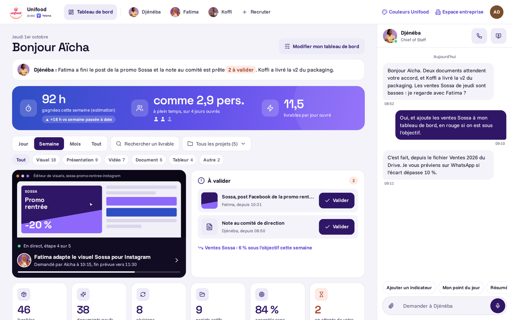

Front client, deux habillages
Démo avec Unifood comme client. Personnes, projets et chiffres inventés.

A. Couleurs Yelema
Logo du client, charte Yelema

B. Couleurs du client
Rouge et or Unifood
Accueil, premier jour
Le bloc En ce moment avant le premier travail des experts
Discussions
Experts, collègues, canaux et mémoire de l’entreprise
Espace d'un expert
Discussion, résumé, profil, connecteurs, drive, mail, calendrier
Recruter
Catalogue filtrable, fiche au clic
Réglages admin
7 experts, 14 membres, profil d'un membre, facturation
États et messages
Catalogue des états
Messages, pop-up d’erreur, chargements, chacun déclenchable
Notifications groupées
Par expert, Toutes ou Non lues, tout marquer comme lu
Créer un espace
Inscription, puis choix du premier Expert
Page introuvable
404, retour à l’accueil
Un problème de notre côté
Réessayer, contacter le support